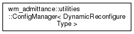
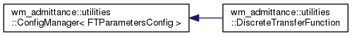
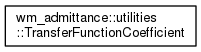
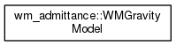

Main Page
Namespaces
Classes
Files
Class List
Class Hierarchy
Class Members
Class Hierarchy
Go to the textual class hierarchy




wm_admitance
Author(s): Kevin Blackburn
autogenerated on Sat Mar 23 2019 16:39:22